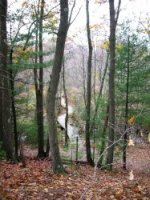

Indian Ridge Reservation

Features:
10,000 to 12,000 years ago the Wisconsin Glacier covered Andover. Melt water streams flowed through cracks in the glacier, depositing rocks and gravel in their channels. Eskers, the resulting ridges, may be 100 feet in height and several miles long. The Indian Ridge esker reaches up to 50 feet.
History:
Indian Ridge has been a popular walk for Andover residents since the last century. Those in poor health were once advised to walk around the Ridge twice a day. In 1896, Indian Ridge was offered for sale by the Hartwell Abbots. Alice Buck, one of Andover’s first conservationists, led efforts to save the Ridge. Her cause inspired editorials in Boston and New York newspapers and articles in national magazines. The property was purchased in December 1897. Alice Buck is memorialized by a plaque mounted on a boulder in the reservation.
Size:
40 acres
Location:
Off of Red Spring Road and Reservation Road
Parking:
Andover High School, Red Spring Road, and West Parish Cemetery Parking lots; along Oriole Dr; and on Dorset Circle.
Warden Information:
Nate Combs
(978) 474-0691
nathancombs99@gmail.com
Joe Ponti
(978) 475-1483
Casper Martin & Linda Woolford
(978) 771-2361